Galerija ideja za enterijer i eksterijer — dnevne sobe, spavaće sobe, kafići, kancelarije, fasade. Prikazi su ilustrativni, da vam pomognu da zamislite mogućnosti; naše realizovane projekte pogledajte u portfoliju.
Kliknite na sliku za uvećani prikaz. Svaki stil možete isprobati na fotografiji svog prostora u Dizajner studiju.
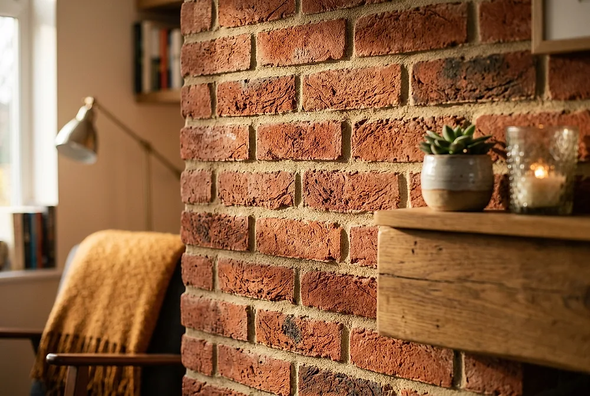
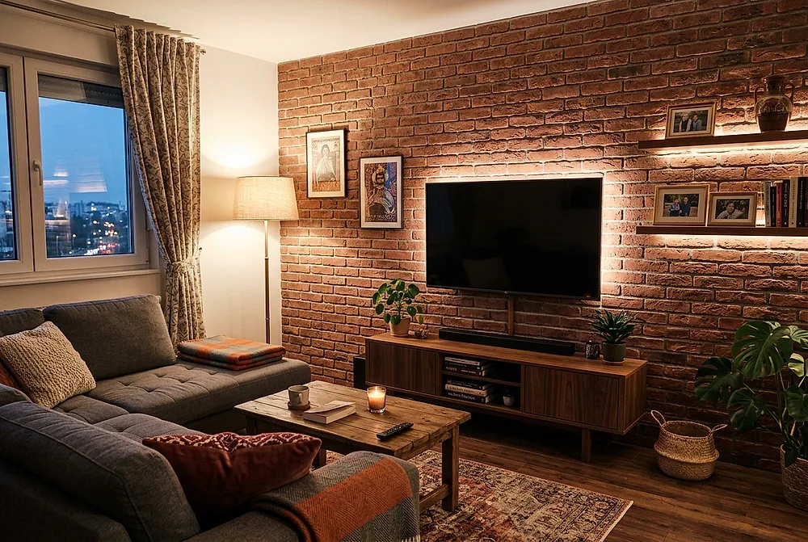
Najpopularnija primena — zid iza televizora koji ceo prostor čini toplijim.
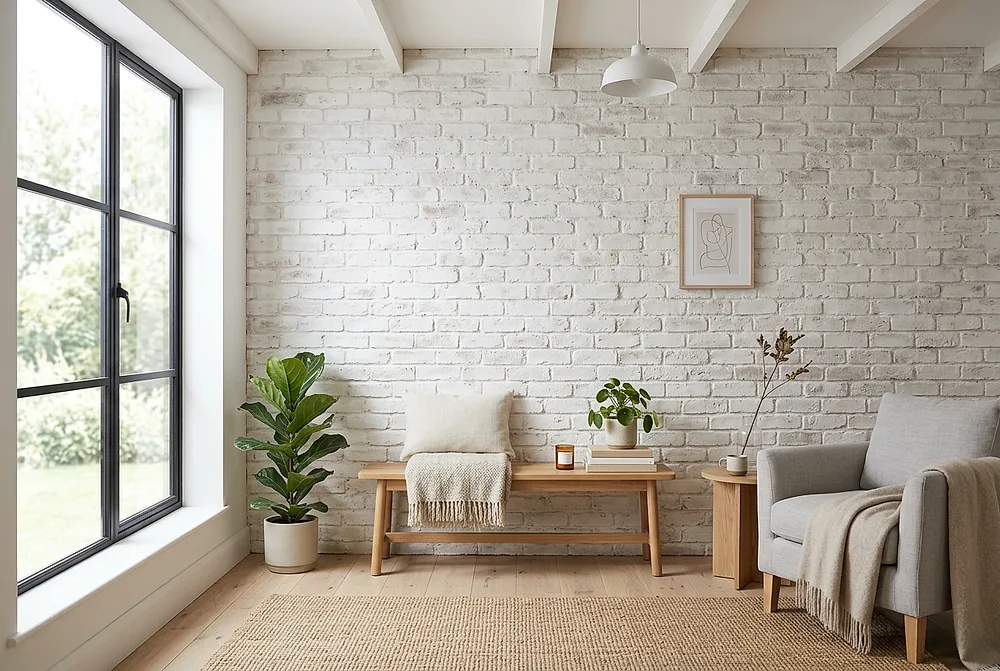
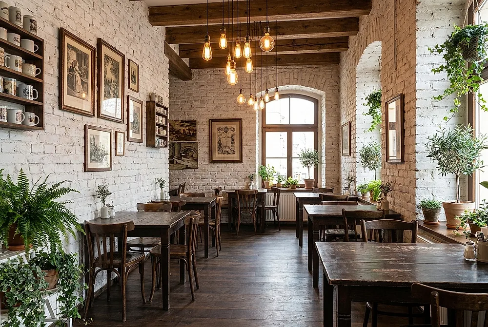
Bela cigla + Edison sijalice + zelenilo = enterijer koji gosti fotografišu.
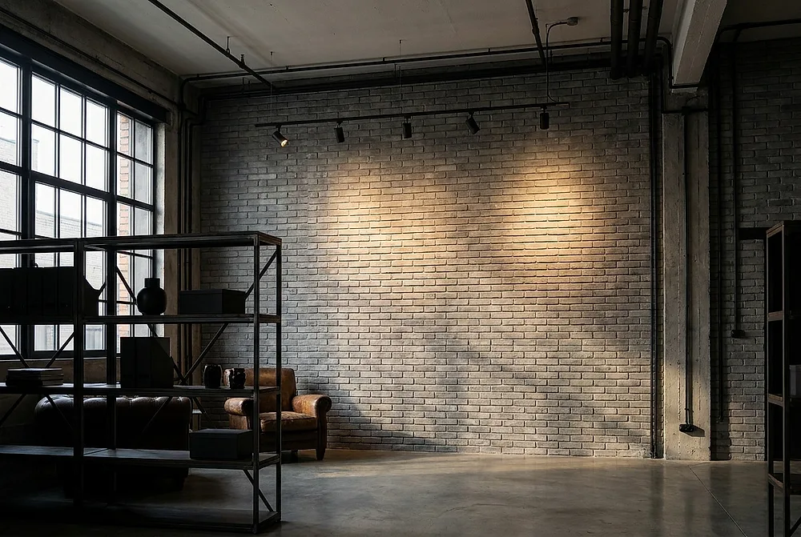
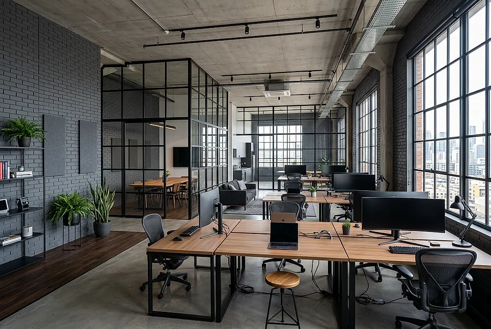
Cigla razbija sterilnost kancelarije i daje prostoru identitet.
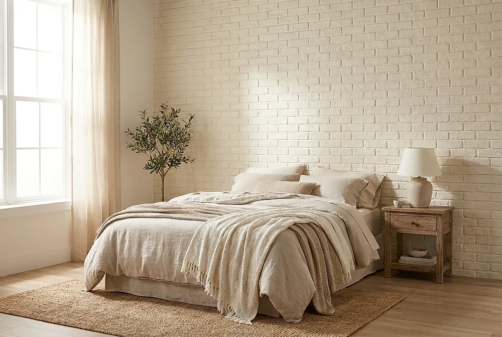
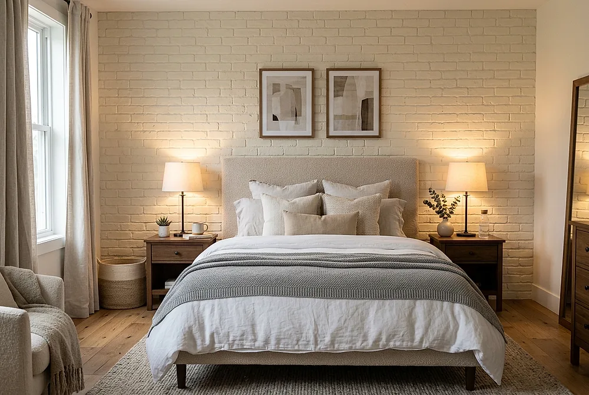
Cigla samo iza kreveta — dovoljno za karakter, bez preteranosti.
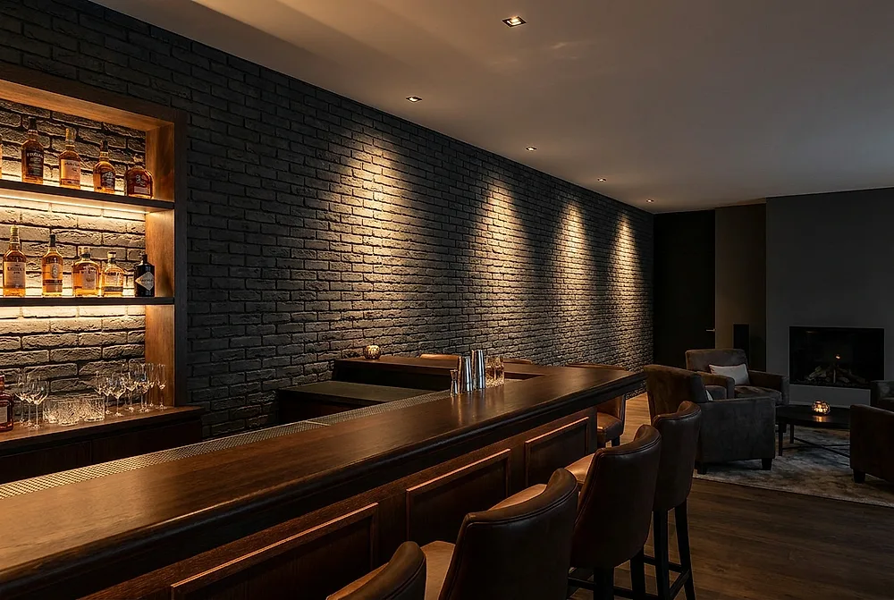
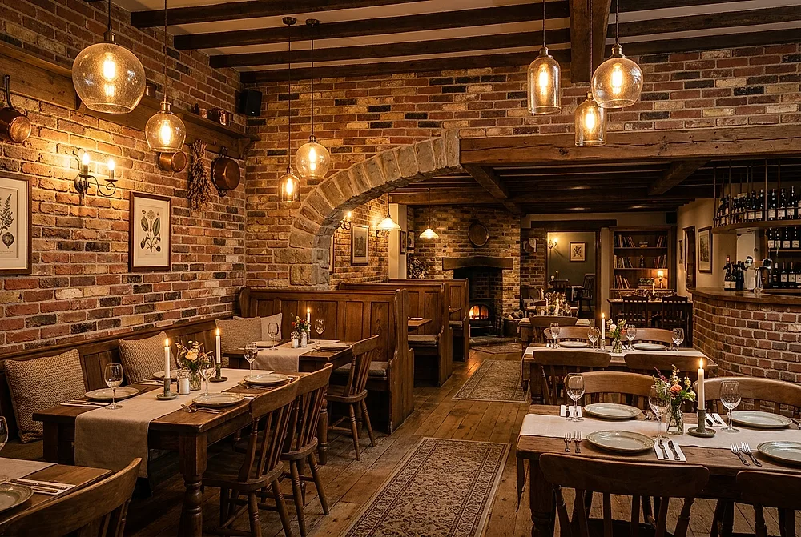
Kombinacija tonova cigle za rustičnu eleganciju.
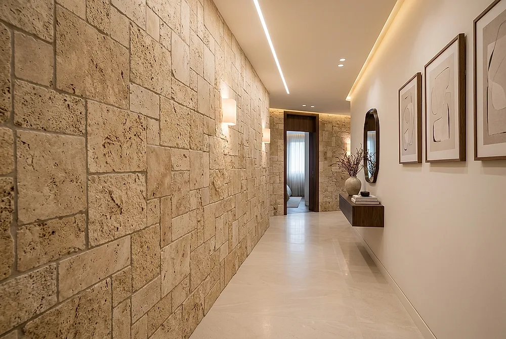
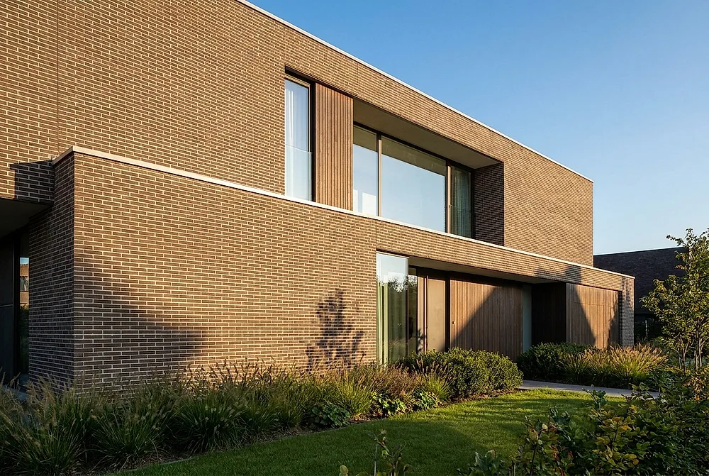
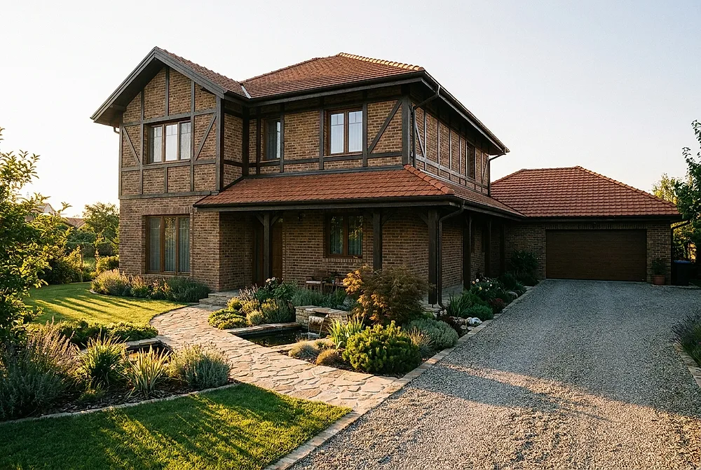
Fasadna cigla otporna na mraz, kišu i vreme.
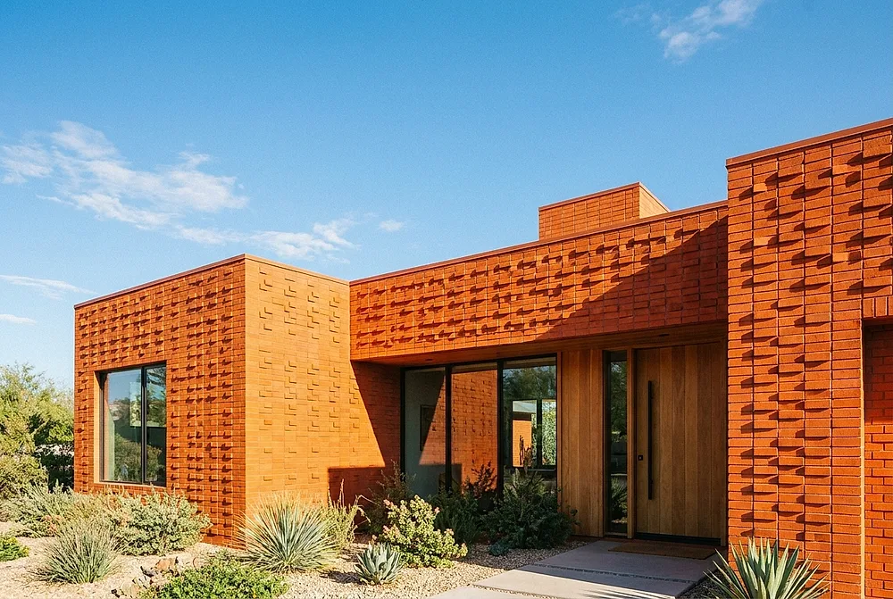
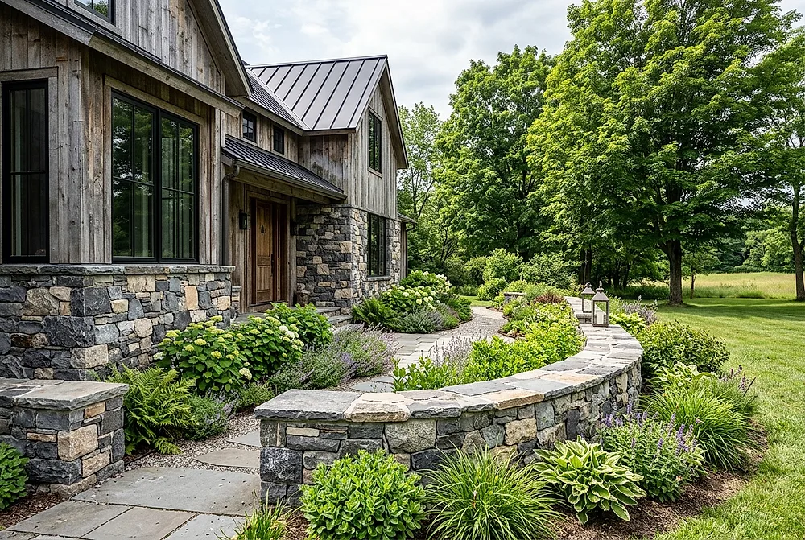
* Prikazi u galeriji su ilustrativne vizuelizacije primene dekorativne cigle — služe kao inspiracija. Naše realizovane projekte pogledajte u portfoliju, a stvarne modele i boje u katalogu.
Otpremite fotografiju svog prostora i vidite kako taj stil izgleda na vašem zidu — za pet minuta.